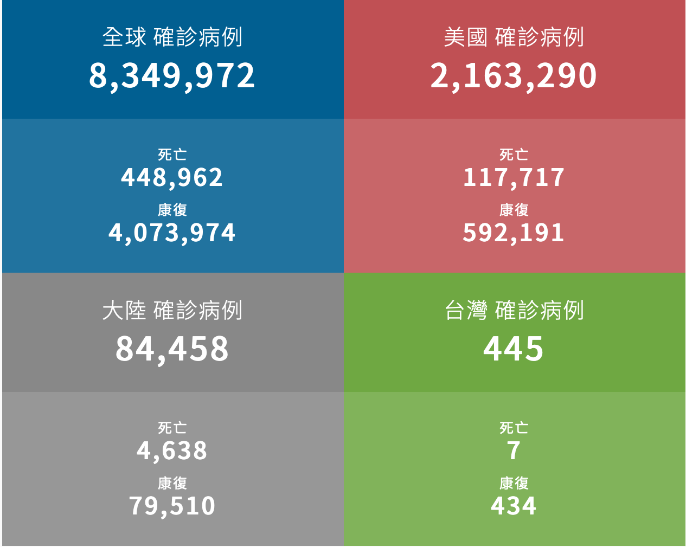

2019新型冠狀病毒（COVID-19）擴散全球，死亡數不斷攀升，各國紛紛祭出防疫政策，試圖阻止疫情蔓延。
聯合新聞網也持續追蹤最新疫情數據，完整整理全球、大陸、台灣的疫情數據，並呈現圖表分析，讓讀者掌握最新進度。
—— 全球 ——
美國約翰霍普金斯大學新冠疫情統計數據顯示，截至台北時間18日14時，全球逾44.8萬死亡，確診病例超過834萬例。
世界衛生組織18日表示，已決定停止羥氯奎寧作為對抗新冠肺炎可能療法的試驗，因為發現它無法降低染疫死亡率。
根據中國和美國科學家研究疫情爆發初期、暴露於確診病例的武漢地區醫護人員，發現人體不太可能產生長效有保護性、對抗新冠病毒的抗體。
印尼擴大病毒檢測之際，全國累計確診病例達4萬1431起，超過新加坡的4萬1216例，居東南亞之冠。另外死亡人數為2276人。
巴西聖保羅州17日再創下單日新增389起死亡新高，累計1萬1521例死亡。專家擔心，隨著州政府逐步放寬社交隔離措施，恢復商業活動，可能促使新增確診和死亡數回升。
美國紐約州長古莫宣布，紐約市預計22日邁入經濟重啟第二階段，非民生必需類零售業可讓顧客入店消費，餐廳可開放戶外餐飲，髮廊與部分辦公場所也能恢復營業，但須遵守社交距離等防疫規定，可容納人數受限。
美國新冠肺炎確診案例持續增加，佛州邁阿密、內華達州決定暫緩進一步解封，德州確診和住院人數也創新高。路透分析發現，全美有17州單周確診個案都攀升。
英國牛津大學研究發現，類固醇藥物地塞米松（dexamethasone）可減少新冠重症患者死亡率達35%。英國衛生大臣漢卡克表示，將立即指示英國醫師對患者使用地塞米松。不過，該藥對病情較輕患者似乎沒有功效。
—— 大陸 ——
據中國大陸官方公布，6月17日0時至24時，新增確診病例28例。其中境外輸入病例4例，本土病例24例（北京21例，河北2例，天津1例）；無新增死亡病例；；新增疑似病例3例，均為本土病例（均在北京）。
北京市疾控中心坦承，目前北京疫情仍處於上升期，不排除發病人數還會維持一段時間。
17日起，北京市所有小區全面實施封閉式管理，且各級學校學生停止到校，33個中、高風險重點地區人員被禁止離開北京，同時調整大眾運輸工具的限流比例並調降滿載率；北京首都、大興機場取消多數航班。
同時，全北京市17日起再度暫停舉辦會展、體育賽事和演出活動；停辦境內跨省區團體旅遊業務，回到今年初的「半封城」狀態。
—— 台灣 ——
中央流行疫情指揮中心17日表示，第66天無本土案例，國內截至目前累計74,699例新型冠狀病毒肺炎相關通報(含73,775例排除)，其中445例確診，分別為354例境外移入，55例本土病例及36例敦睦艦隊。確診個案中7人死亡，434人解除隔離，其餘持續住院隔離中。
部分境外生可返台，教育部公布，優先開放疫情低風險國家境外生入境，包括越南、香港、澳門、泰國、帛琉、紐西蘭、汶萊、斐濟、澳洲、蒙古、不丹。優先順位是以108學年應屆畢業生為優先，其次是其餘舊生，再次是109學年新生。
商務來台居家檢疫天數縮短辦法也出爐，指揮中心指揮官陳時中說，各國風險分級未來長期停留仍須檢疫14天，短期停留則有變通方式，自6月22日起可縮短居家檢疫，將以風險程度分級，商務人士來台前需檢附核酸檢測陰性證明，入境後可先檢疫5天、7天。
對這個網頁有什麼問題，不管好的壞的都可以在底下留言告訴我ㄛ！